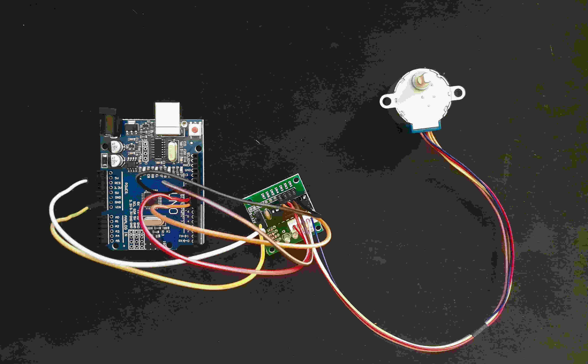

Courses in Calculus I and data structures are the best way to fall asleep.
Arduino? ESP32? 20.12.2025
I just started using arduino uno microcontroller and did a basic stuff like turn on the leds in ARDUINO IDE. My goal is simple - to do everything for a typical master's thesis and document it here. But now I can't do shit so... I'm gonna do random projects LOL.
Just asked my friend to order high voltage generator converter (unfortunately, I can't do it by myself). For what you ask? I want to construct a basic electric arc at home (don't do that kids, it's dangerous!). I will use Van der Graaf scheme to do so. But now, I have to buy some stuff.
For this project I will use:
- Tape (normal & electric);
- Can;
- Tube;
- Rubber band (must be wide);
- Fuse;
- Small motor;
- PSU;
- Paper clips (thin & metal thingy);
- Wires;
- Something to minimize noises like whiteboard eraser or tuff sponge block (must include magnet);
Now, I just have to order this from alledrogo (Waiting... T_T)
Info 21.12.2025
The project will start in January :)
Stepper Motor 28byj48 22.12.2025
While I wait for parts for my electric arc, I did one easy example with 28byj48 stepper motor & ULN 2003 DM.

Okay... but what is this lol?
Basically, this big metal thingy is a unipolar motor. We used our circuit (ULN 2003 - green thingy) to run this bad boy. Everything is plugged to arduino microcontroller to power this scheme up.
Used components:
- Step Motor 28Bbyj-48
- Stepper Motor Drive (ULN 2003)
- Microcontroller
- Jumper wires (M/F)
- USB cable A/B (For your microcontroller)
That's it?
Nah, you must programm this bitch to work as you want lol. Use ARDUINO IDE to do so.
Example code by Tom Igoe:
#include <Stepper.h>
const int stepsPerRevolution = 200; // change this to fit the number of steps per revolution
// for your motor
// initialize the stepper library on pins 8 through 11:
Stepper myStepper(stepsPerRevolution, 8, 9, 10, 11);
void setup() {
// set the speed at 60 rpm:
myStepper.setSpeed(60);
// initialize the serial port:
Serial.begin(9600);
}
void loop() {
// step one revolution in one direction:
Serial.println("clockwise");
myStepper.step(stepsPerRevolution);
delay(500);
// step one revolution in the other direction:
Serial.println("counterclockwise");
myStepper.step(-stepsPerRevolution);
delay(500);
}
And you have it!
My expirience:
I would prefer to use this stepper motor with a seperate power supply and a breadbord but i didn't have one :< I'll gladly come back to the stepper motors topic but these are ideas for the future; for now I focus on one thing at a time.